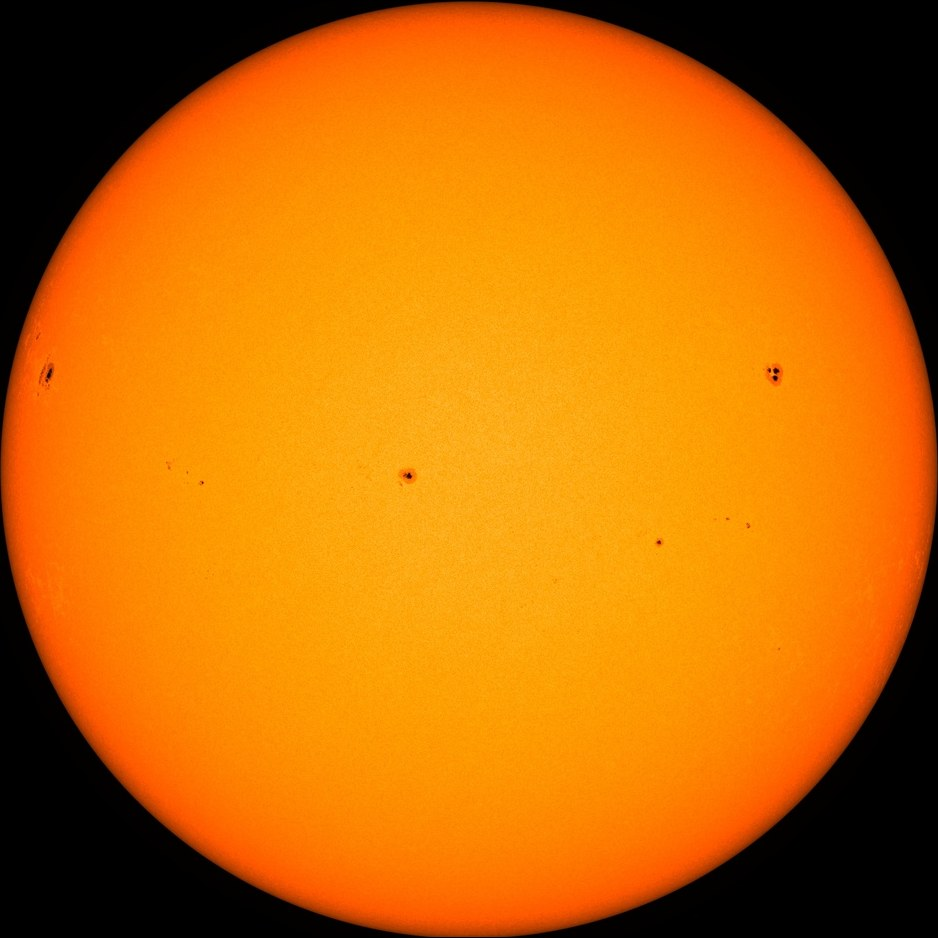
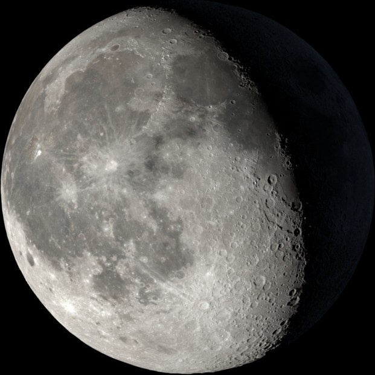

Sun, Moon & Stars: The Celestial Clock
Earth is not standing still. Its 24-hour spin creates the illusion of a moving Sun and revolving night stars, while the Moon's 29.5-day dance around Earth sculpts the changing phases that have guided calendars for millennia.
1 · The Sun: Powerhouse of the Earth System
The Sun is a G-type main-sequence star (yellow dwarf) containing 99.86% of the solar system's entire mass. Every second, nuclear fusion in its core fuses 600 million tons of hydrogen into helium, powering Earth's climate, weather, photosynthesis, and winds.

Why Does the Sun Appear to Move?
To ancient stargazers, the Sun appeared to travel across the sky from East to West every day. In reality, the Sun is virtually fixed relative to our solar system's center: Earth is rotating eastward on its axis at roughly 1,670 km/h (1,037 mph) at the equator. This rotation makes the sky appear to spin around us in reverse!
2 · Day, Night & The Shadow Clock
Because Earth is an opaque sphere in parallel sunlight, exactly 50% of the planet is in daylight while the other 50% is in shadow. Scrub the time slider to observe Earth spinning from space alongside the ground observer's changing shadow.
Sunrise (East)
At dawn (~06:00), the Sun rises above the eastern horizon at a low angle. Because the incoming light rays are nearly horizontal, the gnomon casts an extremely long shadow pointing directly West.
Solar Noon (Zenith Peak)
At solar noon (~12:00), the Sun reaches its highest point in the sky. In the Northern Hemisphere, it peaks in the southern sky, casting the shortest shadow of the day, pointing True North.
Sunset (West)
As Earth continues its eastward rotation, the Sun dips toward the western horizon (~18:00). Shadows lengthen dramatically once more, pointing directly East before nightfall.
3 · Moon Phases Orbital Laboratory
The most common misconception in astronomy is that Moon phases are caused by Earth's shadow. They are NOT! Exactly half of the Moon is always illuminated by the Sun at all times. The phase we see changes simply because we view that illuminated half from different orbital angles as the Moon circles Earth every 29.5 days.
First Quarter
Rises at solar noon, peaks in the southern sky at sunset, and sets around midnight. Half of the visible lunar disc is illuminated.

4 · Solar vs. Lunar Eclipses: When Shadows Meet
Why don't we have eclipses every single month? Because the Moon's orbit is tilted 5.14 degrees relative to Earth's orbital plane (the ecliptic). Eclipses can only occur when the Moon crosses the plane of Earth's orbit at points called nodes.
Solar Eclipse (New Moon Alignment)
The Moon passes directly between the Sun and Earth ($Sun \rightarrow Moon \rightarrow Earth$). By a breathtaking cosmic coincidence, the Sun is 400 times wider than the Moon, but also 400 times farther away! They appear almost identical in angular size (0.5°).
- Umbra: The dark inner shadow cone where totality occurs, revealing the ghostly white solar corona.
- Penumbra: The lighter outer shadow cone experiencing a partial solar eclipse.
- Path of Totality: A narrow ribbon typically only 100–160 km wide sweeping across Earth's surface.
Lunar Eclipse (Full Moon Alignment)
Earth passes directly between the Sun and the Moon ($Sun \rightarrow Earth \rightarrow Moon$), casting Earth's massive shadow across the full lunar disc. Visible from the entire night hemisphere of Earth!
- Blood Moon Color: During totality, the Moon doesn't turn black—it glows deep copper-red.
- Atmospheric Rayleigh Scattering: Earth's atmosphere filters out blue wavelengths and refracts all the sunrises and sunsets around the globe into the shadow cone, projecting reddish light onto the Moon!
5 · Navigating the Night Sky & Star Trails
Because Earth's rotational axis points almost directly toward the star Polaris (the North Star), all stars in the Northern Hemisphere appear to rotate counterclockwise in concentric circles around Polaris. Drag the sky dome or enable star trails to watch centuries of navigators find True North.
6 · The Celestial Detective Quiz
Apply your understanding of solar elevation, lunar geometry, and circumpolar star navigation to solve these four classroom challenges.
Question 1 of 4
You walk outside at 8:00 AM in the morning and look down at your shadow. In which direction is your shadow pointing?
Core Celestial Axioms to Remember
- Shadow Rule: A shadow always points in the exact opposite direction of the light source. Sun in East $\rightarrow$ Shadow in West.
- Noon Rule: At solar noon in the Northern mid-latitudes, the Sun is due South, so shadows point due North.
- Moon Illumination: 50% of the Moon is always lit by the Sun. Moon phases represent how much of that lit half faces Earth.
- Polaris Navigation: Polaris is the North Star because Earth's North Pole points at it. Its angle above your northern horizon equals your latitude!